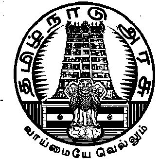

©
GOVERNMENT OF TAMIL NADU 2021
[Regd. No. TN/CCN/467/2012-14. [R. Dis. No. 197/2009. [Price: Rs. 1.60 Paise.
| îI›ï£´ ÜóCî› CøŠ¹ ªõOf´ ஆணையின்படி வெளியிடப்பட்டது. | ||

No. 392A] சென்னை, வியாழக்கிழமை, செப்டம்பர் 2, 2021 ÝõE 17, பிலவ, திருவள்ளுவர் ஆண்டு-2052
2021 - ஆ(cid:221) ஆ(cid:217)(cid:169) ெச(cid:220)ட(cid:221)ப(cid:223) (cid:127)(cid:213)க(cid:227) 2 ஆ(cid:221) நாள(cid:229)(cid:178) த(cid:131)(cid:226)நா(cid:169) ச(cid:216)டம(cid:229)ற(cid:220) ேபரைவ(cid:132)(cid:224) அ(cid:134)(cid:175)க(cid:220)ப(cid:169)(cid:218)த(cid:220)ப(cid:216)ட (cid:130)(cid:229)வ(cid:177)(cid:221) ச(cid:216)ட(cid:175)(cid:229)வ(cid:125)(cid:182) ேநா(cid:212)க காரண (cid:138)ள(cid:212)க(cid:182)ைர(cid:176)ட(cid:229) ேச(cid:223)(cid:218)(cid:171), த(cid:131)(cid:226)நா(cid:169) ச(cid:216)டம(cid:229)ற(cid:220) ேபரைவ (cid:138)(cid:127)க(cid:136)(cid:229) 130 - ஆ(cid:221) (cid:138)(cid:127)(cid:132)(cid:229) (cid:142)(cid:226) ெபா(cid:171)(cid:218) தகவ(cid:179)(cid:212)காக ெவ(cid:136)(cid:132)ட(cid:220)ப(cid:169)(cid:120)(cid:229)ற(cid:171).
1908 ஆ(cid:221) ஆ(cid:217)(cid:169) ப(cid:127)(cid:182)(cid:214) ச(cid:216)ட(cid:218)ைத த(cid:131)(cid:226)நா(cid:169) மா(cid:128)ல(cid:218)(cid:127)(cid:228)(cid:164) ெபா(cid:177)(cid:219)(cid:171)(cid:221) வைக(cid:132)(cid:224), ேம(cid:179)(cid:221) (cid:127)(cid:177)(cid:218)த(cid:221) ெச(cid:222)வத(cid:228)கானெதா(cid:177) ச(cid:216)ட(cid:175)(cid:229)வ(cid:125)(cid:182).
இ(cid:219)(cid:127)ய(cid:212) (cid:164)(cid:125)யர(cid:122)(cid:229) எ(cid:181)ப(cid:218)(cid:127) இர(cid:217)டாவ(cid:171) ஆ(cid:217)(cid:125)(cid:224) த(cid:131)(cid:226)நா(cid:169) மா(cid:128)ல(cid:218)(cid:127)(cid:229) ச(cid:216)டம(cid:229)ற ேபரைவ(cid:132)னா(cid:224) (cid:130)(cid:229)வ(cid:177)மா(cid:178) ச(cid:216)ட(cid:131)ய(cid:228)ற(cid:220)ப(cid:169)வதா(cid:164)க:—
1. (1) இ(cid:219)த(cid:214) ச(cid:216)ட(cid:221), 2021ஆ(cid:221) ஆ(cid:217)(cid:169) ப(cid:127)(cid:182)(cid:214) (த(cid:131)(cid:226)நா(cid:169) இர(cid:217)டா(cid:221) (cid:127)(cid:177)(cid:218)த)
ச(cid:216)ட(cid:221) என அைழ(cid:212)க(cid:220)ெப(cid:178)(cid:221).
(cid:164)(cid:178)(cid:219)தைல(cid:220)(cid:174), அளா(cid:182)ைக ம(cid:228)(cid:178)(cid:221) (2) இ(cid:171) த(cid:131)(cid:226)நா(cid:169) மா(cid:128)ல(cid:221) (cid:175)(cid:181)வ(cid:171)(cid:221) அளா(cid:138) (cid:128)(cid:228)(cid:164)(cid:221).
ெதாட(cid:212)க(cid:221).
(3) இ(cid:171) உடன(cid:125)யாக நைட(cid:175)ைற(cid:212)(cid:164) வ(cid:177)த(cid:224) ேவ(cid:217)(cid:169)(cid:221).
ைமய(cid:214)
2-ஆ(cid:221) (cid:130)(cid:133)(cid:138)(cid:228)கான ச(cid:216)ட(cid:221) XVI /1908.
(cid:127)(cid:177)(cid:218)த(cid:221).
2. 1908 - ஆ(cid:221) ஆ(cid:217)(cid:169) ப(cid:127)(cid:182)(cid:214)ச(cid:216)ட(cid:218)(cid:127)(cid:229) (இத(cid:229)(cid:130)(cid:229)(cid:174) (cid:175)த(cid:229)ைம(cid:214)ச(cid:216)ட(cid:221) என (cid:164)(cid:134)(cid:220)(cid:130)ட(cid:220)ப(cid:169)வதான) 2 - ஆ(cid:221) (cid:130)(cid:133)(cid:138)(cid:224) (5)-ஆ(cid:221) (cid:183)(cid:178)(cid:212)(cid:164)(cid:220) (cid:130)(cid:229)(cid:174), (cid:130)(cid:229)வ(cid:177)(cid:221) (cid:183)றான(cid:171) உ(cid:216)(cid:174)(cid:164)(cid:218)த(cid:220)ப(cid:169)த(cid:224) ேவ(cid:217)(cid:169)(cid:221), அதாவ(cid:171) :—
ைமய(cid:214)
ச(cid:216)ட(cid:221) XLV /1860.
"(5-A) "ெபா(cid:222)யான ஆவண(cid:221)" எ(cid:229)ப(cid:171), 1860 - ஆ(cid:221) ஆ(cid:217)(cid:169) இ(cid:219)(cid:127)ய த(cid:217)டைன ெதா(cid:164)(cid:220)(cid:174)(cid:214)ச(cid:216)ட(cid:218)(cid:127)(cid:229) 470 - ஆ(cid:221) (cid:130)(cid:133)(cid:138)(cid:224) ெகா(cid:169)(cid:212)க(cid:220)ப(cid:216)(cid:169)(cid:227)ள அேத ெபா(cid:177)ைள(cid:212) ெகா(cid:217)(cid:125)(cid:177)(cid:212)(cid:164)(cid:221);".
22-B எ(cid:173)(cid:221) (cid:174)(cid:127)ய 3. (cid:175)த(cid:229)ைம(cid:214)ச(cid:216)ட(cid:218)(cid:127)(cid:229) 22-A-ஆ(cid:221) (cid:130)(cid:133)(cid:138)(cid:228)(cid:164) (cid:130)(cid:229)(cid:174), (cid:130)(cid:229)வ(cid:177)(cid:221) (cid:130)(cid:133)வான(cid:171)
(cid:130)(cid:133)(cid:138)ைன உ(cid:216)(cid:174)(cid:164)(cid:218)த(cid:220)ப(cid:169)த(cid:224) ேவ(cid:217)(cid:169)(cid:221), அதாவ(cid:171) :—
உ(cid:216)(cid:174)(cid:164)(cid:218)(cid:171)த(cid:224).
"22-B. ச(cid:216)ட(cid:218)தா(cid:224) தைடெச(cid:222)ய(cid:220)ப(cid:216)ட ெபா(cid:222)யான ஆவண(cid:213)க(cid:227) ம(cid:228)(cid:178)(cid:221) (cid:130)ற ஆவண(cid:213)கைள ப(cid:127)(cid:182) ெச(cid:222)ய ம(cid:178)(cid:218)த(cid:224).- இ(cid:219)த(cid:214)ச(cid:216)ட(cid:218)(cid:127)(cid:224) எ(cid:229)ன அட(cid:213)(cid:120)(cid:132)(cid:177)(cid:219)த ேபா(cid:127)(cid:179)(cid:221), ப(cid:127)(cid:182) ெச(cid:222)(cid:176)(cid:221) அ(cid:179)வலரானவ(cid:223) (cid:130)(cid:229)வ(cid:177)(cid:221) ஆவண(cid:213)கைள ப(cid:127)(cid:182) ெச(cid:222)வத(cid:228)(cid:164) ம(cid:178)(cid:218)த(cid:224) ேவ(cid:217)(cid:169)(cid:221), அதாவ(cid:171) :—
(1) ெபா(cid:222)யான ஆவண(cid:221);
Ex-IV-392A—1
[ 1 ]2 தமிழ்நாடு அரசிதழ் சிறப்பு வெளியீடு (2) அ(cid:220)ேபாைத(cid:212)(cid:164) நைட(cid:175)ைற(cid:132)(cid:179)(cid:227)ள ைமய(cid:214)ச(cid:216)ட(cid:221) அ(cid:224)ல(cid:171)
மா(cid:128)ல(cid:214)ச(cid:216)ட(cid:221) எதனா(cid:179)(cid:221) தைட ெச(cid:222)ய(cid:220)ப(cid:216)ட ப(cid:133)மா(cid:228)ற(cid:213)க(cid:227) ெதாட(cid:223)பான ஆவண(cid:221);
(3) அ(cid:220)ேபாைத(cid:212)(cid:164) நைட(cid:175)ைற(cid:132)(cid:179)(cid:227)ள ைமய(cid:214)ச(cid:216)ட(cid:218)(cid:127)(cid:229) அ(cid:224)ல(cid:171) மா(cid:128)ல(cid:214)ச(cid:216)ட(cid:218)(cid:127)(cid:229) (cid:142)(cid:181)(cid:227)ள ஒ(cid:177) த(cid:164)(cid:127) வா(cid:222)(cid:219)த அ(cid:127)கார அைம(cid:220)(cid:130)னா(cid:224) அ(cid:224)ல(cid:171) (cid:150)(cid:127)ம(cid:229)ற(cid:221) அ(cid:224)ல(cid:171) (cid:149)(cid:223)(cid:220)பாய(cid:221) எதனா(cid:179)(cid:221) (cid:128)ர(cid:219)தரமாக அ(cid:224)ல(cid:171) த(cid:228)கா(cid:135)கமாக இைண(cid:212)க(cid:220)ப(cid:216)(cid:169)(cid:227)ள அைசயா ெசா(cid:218)(cid:127)ைன (cid:138)(cid:228)பைன, ெகாைட, (cid:164)(cid:218)தைக அ(cid:224)ல(cid:171) ம(cid:228)ற வைக(cid:132)(cid:229) (cid:194)ல(cid:221) உ(cid:133)ைம மா(cid:228)ற(cid:221) ெச(cid:222)வ(cid:171) ெதாட(cid:223)பான ஆவண(cid:221);
(4) மா(cid:128)ல அர(cid:166) அ(cid:134)(cid:138)(cid:212)ைக(cid:132)(cid:229) வா(cid:132)லாக (cid:164)(cid:134)(cid:218)(cid:127)டலா(cid:164)(cid:221)
(cid:130)ற ஆவண(cid:221) எ(cid:171)(cid:182)(cid:221).".
4. (cid:175)த(cid:229)ைம(cid:214)ச(cid:216)ட(cid:218)(cid:127)(cid:229) 77—ஆ(cid:221) (cid:130)(cid:133)(cid:138)(cid:228)(cid:164) (cid:130)(cid:229)(cid:174), (cid:130)(cid:229)வ(cid:177)(cid:221) (cid:130)(cid:133)(cid:182)களான(cid:171)
உ(cid:216)(cid:174)(cid:164)(cid:218)த(cid:220)ப(cid:169)த(cid:224) ேவ(cid:217)(cid:169)(cid:221), அதாவ(cid:171) :—
77-A ம(cid:228)(cid:178)(cid:221) 77-B
எ(cid:173)(cid:221) (cid:174)(cid:127)ய
(cid:130)(cid:133)(cid:182)கைள
உ(cid:216)(cid:174)(cid:164)(cid:218)(cid:171)த(cid:224).
"77-A. (cid:164)(cid:134)(cid:218)த (cid:122)ல ேந(cid:223)(cid:182)க(cid:136)(cid:224) ப(cid:127)(cid:182) ெச(cid:222)ய(cid:220)ப(cid:216)ட ஆவண(cid:213)கைள இர(cid:218)(cid:171) ெச(cid:222)த(cid:224).— (1) 22-A-ஆ(cid:221) (cid:130)(cid:133)(cid:182) அ(cid:224)ல(cid:171) 22-B-ஆ(cid:221) (cid:130)(cid:133)(cid:182)(cid:212)(cid:164) (cid:175)ரணாக ஆவண(cid:221) ப(cid:127)(cid:182) ெச(cid:222)ய(cid:220)ப(cid:216)(cid:169)(cid:227)ள(cid:171) என ப(cid:127)வாள(cid:223) க(cid:177)(cid:171)(cid:120)ற(cid:138)ட(cid:218)(cid:171), அ(cid:219)த ப(cid:127)(cid:138)ைன ப(cid:127)வாள(cid:223), தானாக (cid:175)(cid:229)வ(cid:219)ேதா அ(cid:224)ல(cid:171) நப(cid:223) எவ(cid:133)ட(cid:131)(cid:177)(cid:219)(cid:171) வர(cid:220)ெப(cid:228)ற (cid:174)கா(cid:223) ஒ(cid:229)(cid:134)(cid:229) (cid:153)ேதா, எ(cid:181)(cid:127)(cid:212)ெகா(cid:169)(cid:218)தவ(cid:177)(cid:212)(cid:164)(cid:221), ஆவண(cid:218)(cid:127)(cid:229) அைன(cid:218)(cid:171) தர(cid:220)(cid:130)ன(cid:177)(cid:212)(cid:164)(cid:221) ம(cid:228)(cid:178)(cid:221) ெதாட(cid:223)(cid:214)(cid:122)யான ஆவண(cid:213)க(cid:227) ஏேத(cid:173)(cid:221) இ(cid:177)(cid:220)(cid:130)(cid:229) அவ(cid:228)(cid:134)(cid:229) தர(cid:220)(cid:130)ன(cid:177)(cid:212)(cid:164)(cid:221) ம(cid:228)(cid:178)(cid:221) ப(cid:127)வாள(cid:133)(cid:229) க(cid:177)(cid:218)(cid:127)(cid:224) ஆவண(cid:218)(cid:127)(cid:229) இர(cid:218)(cid:127)னா(cid:224) பா(cid:127)(cid:212)க(cid:220)படலா(cid:164)(cid:221) அைன(cid:218)(cid:171) (cid:130)ற நப(cid:223)க(cid:180)(cid:212)(cid:164)(cid:221) ஆவண(cid:218)(cid:127)(cid:229) ப(cid:127)வான(cid:171) ஏ(cid:229) இர(cid:218)(cid:171) ெச(cid:222)ய(cid:220)பட(cid:212)(cid:183)டா(cid:171) எ(cid:229)பத(cid:228)கான காரண(cid:218)ைத(cid:212) ேக(cid:216)(cid:169) ஒ(cid:177) அ(cid:134)(cid:138)(cid:220)ைப வழ(cid:213)க ேவ(cid:217)(cid:169)(cid:221). அத(cid:228)காக ெபற(cid:220)ப(cid:216)ட ப(cid:127)(cid:224) ஏேத(cid:173)(cid:221) இ(cid:177)(cid:220)(cid:130)(cid:229), அைத க(cid:177)(cid:218)(cid:127)(cid:224) ெகா(cid:217)(cid:169) ப(cid:127)வாளரானவ(cid:223) ஆவண(cid:218)(cid:127)(cid:229) ப(cid:127)(cid:138)ைன இர(cid:218)(cid:171) ெச(cid:222)யலா(cid:221) ம(cid:228)(cid:178)(cid:221) ெதாட(cid:223)(cid:174)ைடய (cid:174)(cid:218)தக(cid:213)க(cid:136)(cid:224) ம(cid:228)(cid:178)(cid:221) அ(cid:216)டவைண(cid:132)(cid:224) அ(cid:218)தைகய இர(cid:218)(cid:171) (cid:164)(cid:134)(cid:218)(cid:171) உ(cid:227)(cid:158)(cid:169) ெச(cid:222)யலா(cid:221).
(2) (1)-ஆ(cid:221) உ(cid:216)(cid:130)(cid:133)(cid:138)(cid:229) (cid:142)ழான அ(cid:127)கார(cid:221) ப(cid:127)(cid:182)(cid:218)(cid:171)ைற(cid:218)
தைலவ(cid:133)னா(cid:179)(cid:221) ெச(cid:179)(cid:218)த(cid:220)படலா(cid:221).
77-B. ேம(cid:224)(cid:175)ைற(cid:154)(cid:169).- (1) 77-Aஆ(cid:221) (cid:130)(cid:133)(cid:138)(cid:229) (1)-ஆ(cid:221) உ(cid:216)(cid:130)(cid:133)(cid:138)(cid:229) (cid:142)(cid:226) ப(cid:127)வாள(cid:133)(cid:229) ஆைண ஒ(cid:229)(cid:134)னா(cid:224) இட(cid:177)(cid:228)ற நப(cid:223) எவ(cid:177)(cid:221), ஆவண(cid:221) இர(cid:218)(cid:171) ெச(cid:222)ய(cid:220)ப(cid:216)ட ேத(cid:127)(cid:132)(cid:135)(cid:177)(cid:219)(cid:171) (cid:175)(cid:220)ப(cid:171) நா(cid:216)க(cid:180)(cid:212)(cid:164)(cid:227) ப(cid:127)(cid:182)(cid:218)(cid:171)ைற(cid:218) தைலவ(cid:133)ட(cid:221) ேம(cid:224)(cid:175)ைற(cid:154)(cid:169) ஒ(cid:229)(cid:134)ைன அ(cid:136)(cid:212)கலா(cid:221) ம(cid:228)(cid:178)(cid:221) ப(cid:127)வாள(cid:133)(cid:229) ஆைணைய உ(cid:178)(cid:127)ப(cid:169)(cid:218)(cid:171)(cid:221), (cid:127)(cid:177)(cid:218)த(cid:221) அ(cid:224)ல(cid:171) இர(cid:218)(cid:171) ெச(cid:222)(cid:176)(cid:221) ஆைண ஒ(cid:229)(cid:134)ைன ப(cid:127)(cid:182)(cid:218)(cid:171)ைற(cid:218) தைலவ(cid:223) வழ(cid:213)(cid:164)த(cid:224) ேவ(cid:217)(cid:169)(cid:221).
(2) 77-A-ஆ(cid:221) (cid:130)(cid:133)(cid:138)(cid:229) (2)ஆ(cid:221) உ(cid:216)(cid:130)(cid:133)(cid:138)(cid:229) (cid:142)(cid:226) ப(cid:127)(cid:182)(cid:218)(cid:171)ைற(cid:218) தைலவரா(cid:224) வழ(cid:213)க(cid:220)ப(cid:216)ட ஓ(cid:223) ஆைணைய ெபா(cid:178)(cid:218)த ேந(cid:223)(cid:138)(cid:224), ஆைண(cid:132)(cid:229) ேத(cid:127)(cid:132)(cid:135)(cid:177)(cid:219)(cid:171) (cid:175)(cid:220)ப(cid:171) நா(cid:216)க(cid:180)(cid:212)(cid:164)(cid:227) மா(cid:128)ல அர(cid:122)ட(cid:221) ேம(cid:224)(cid:175)ைற(cid:154)டான(cid:171) அைம(cid:219)(cid:127)(cid:177)(cid:218)த(cid:224) ேவ(cid:217)(cid:169)(cid:221) ".
81-A ம(cid:228)(cid:178)(cid:221) 81-B எ(cid:173)(cid:221)
5. (cid:175)த(cid:229)ைம(cid:214)ச(cid:216)ட(cid:218)(cid:127)(cid:229) 81-ஆ(cid:221) (cid:130)(cid:133)(cid:138)(cid:228)(cid:164) (cid:130)(cid:229)(cid:174), (cid:130)(cid:229)வ(cid:177)(cid:221)
(cid:174)(cid:127)ய (cid:130)(cid:133)(cid:182)கைள (cid:130)(cid:133)(cid:182)களான(cid:171) உ(cid:216)(cid:174)(cid:164)(cid:218)த(cid:220)ப(cid:169)த(cid:224) ேவ(cid:217)(cid:169)(cid:221), அதாவ(cid:171):—
உ(cid:216)(cid:174)(cid:164)(cid:218)(cid:171)த(cid:224).
"81-A. 22-A ம(cid:228)(cid:178)(cid:221) 22-B-ஆ(cid:221) (cid:130)(cid:133)(cid:182)க(cid:180)(cid:212)(cid:164) (cid:175)ரணாக ஆவண(cid:213)கைள(cid:220) ப(cid:127)(cid:182) ெச(cid:222)த(cid:179)(cid:212)கான த(cid:217)ட(cid:218)ெதாைக.- (1) இ(cid:219)த(cid:214)ச(cid:216)ட(cid:218)(cid:127)(cid:229)ப(cid:125) ப(cid:126)யம(cid:223)(cid:218)த(cid:220)ப(cid:216)ட ஒ(cid:225)ெவா(cid:177) ப(cid:127)(cid:182) அ(cid:179)வல(cid:177)(cid:221) ம(cid:228)(cid:178)(cid:221) இ(cid:219)த(cid:214)ச(cid:216)ட(cid:218)(cid:127)(cid:229) ேநா(cid:212)க(cid:213)க(cid:180)(cid:212)காக அவ(cid:133)(cid:229) அ(cid:179)வலக(cid:218)(cid:127)(cid:224) ப(cid:126)(cid:132)(cid:179)(cid:227)ள இ(cid:219)த(cid:214)ச(cid:216)ட(cid:218)(cid:127)(cid:229) (cid:142)(cid:226) ப(cid:127)(cid:138)(cid:228)காக அ(cid:136)(cid:212)க(cid:220)ப(cid:216)ட ஆவண(cid:213)க(cid:136)(cid:229) ப(cid:127)(cid:182)(cid:212)(cid:164) ெபா(cid:178)(cid:220)(cid:174)ைடயவரான ஒ(cid:225)ெவா(cid:177) நப(cid:177)(cid:221) 22-A-ஆ(cid:221) (cid:130)(cid:133)(cid:182) அ(cid:224)ல(cid:171) 22-B-ஆ(cid:221) (cid:130)(cid:133)(cid:138)(cid:228)(cid:164) (cid:175)ரணாக ஆவண(cid:218)ைத ப(cid:127)(cid:182) ெச(cid:222)தா(cid:224), (cid:194)(cid:229)(cid:178) ஆ(cid:217)(cid:169)க(cid:180)(cid:212)(cid:164) (cid:150)(cid:216)(cid:125)(cid:212)க(cid:220)படலா(cid:164)(cid:221) ஒ(cid:177) கால அள(cid:138)(cid:228)கான (cid:122)ைற த(cid:217)டைன(cid:176)ட(cid:229) அ(cid:224)ல(cid:171) த(cid:217)ட(cid:218)ெதாைக(cid:176)ட(cid:229) அ(cid:224)ல(cid:171) இ(cid:225)(cid:138)ர(cid:217)(cid:169)ட(cid:173)(cid:221) ேச(cid:223)(cid:218)(cid:171) த(cid:217)(cid:125)(cid:212)க(cid:220)ப(cid:169)த(cid:224) ேவ(cid:217)(cid:169)(cid:221).
3 தமிழ்நாடு அரசிதழ் சிறப்பு வெளியீடு(2) இ(cid:219)த(cid:220)(cid:130)(cid:133)(cid:138)(cid:224) அட(cid:213)(cid:120)(cid:176)(cid:227)ள எ(cid:171)(cid:182)(cid:221) ந(cid:224)ெல(cid:217)ண(cid:218)(cid:127)(cid:224)
ெச(cid:222)ய(cid:220)ப(cid:216)ட ஆவண(cid:220)ப(cid:127)(cid:138)(cid:229) ேந(cid:223)(cid:138)(cid:224) ெபா(cid:177)(cid:219)தலாகா(cid:171).
ைமய(cid:214)ச(cid:216)ட(cid:221)
XLV/1860.
(cid:138)ள(cid:212)க(cid:221).— இ(cid:219)த உ(cid:216)(cid:130)(cid:133)(cid:138)(cid:229) ேநா(cid:212)க(cid:218)(cid:127)(cid:228)காக, "ந(cid:224)ெல(cid:217)ண(cid:221)" எ(cid:229)ற ெசா(cid:228)ெறாடரான(cid:171) உ(cid:133)ய கவன(cid:218)(cid:171)ட(cid:229), எ(cid:214)ச(cid:133)(cid:212)ைக(cid:176)ட(cid:229) ம(cid:228)(cid:178)(cid:221) ெபா(cid:178)(cid:220)(cid:174)ண(cid:223)(cid:182)ட(cid:229) அ(cid:224)ல(cid:171) 1860-ஆ(cid:221) ஆ(cid:217)(cid:169) இ(cid:219)(cid:127)ய த(cid:217)டைன(cid:218) ெதா(cid:164)(cid:220)(cid:174)(cid:214)ச(cid:216)ட(cid:218)(cid:127)(cid:229) 79-ஆ(cid:221) (cid:130)(cid:133)(cid:138)(cid:229) (cid:142)ழான ச(cid:216)ட(cid:218)(cid:127)(cid:229) ப(cid:125) அவ(cid:223)தா(cid:221) ச(cid:133)ெயன ந(cid:221)(cid:130) தவ(cid:178)தலாக ந(cid:224)ெல(cid:217)ண(cid:218)(cid:127)(cid:224) நப(cid:223) ஒ(cid:177)வரா(cid:224) ெச(cid:222)ய(cid:220)ப(cid:216)ட அ(cid:224)ல(cid:171) ெச(cid:222)ய(cid:220)ப(cid:216)டதாக க(cid:177)த(cid:220)ப(cid:216)ட ெசய(cid:224) எ(cid:171)(cid:182)(cid:221) எ(cid:229)(cid:178) ெபா(cid:177)(cid:227)ப(cid:169)(cid:221).
81-B. (cid:128)(cid:178)ம(cid:213)களா(cid:224) ெச(cid:222)ய(cid:220)ப(cid:169)(cid:221) (cid:164)(cid:228)ற(cid:213)க(cid:227),— (1) இ(cid:219)த(cid:214)ச(cid:216)ட(cid:218)(cid:127)(cid:229) ப(cid:125)யான (cid:164)(cid:228)ற(cid:221) ஒ(cid:177) (cid:128)(cid:178)ம(cid:218)(cid:127)னா(cid:224) ெச(cid:222)ய(cid:220)ப(cid:216)(cid:125)(cid:177)(cid:212)(cid:120)ற(cid:138)ட(cid:218)(cid:171), அ(cid:219)த (cid:164)(cid:228)ற(cid:221) ெச(cid:222)ய(cid:220)ப(cid:216)ட ேநர(cid:218)(cid:127)(cid:224), அ(cid:219)த (cid:128)(cid:178)ம(cid:218)(cid:127)(cid:229) அ(cid:179)வைல நட(cid:218)(cid:127) வ(cid:177)வத(cid:228)கான அ(cid:219)த (cid:128)(cid:178)ம(cid:218)(cid:127)(cid:229) ெபா(cid:178)(cid:220)(cid:174)ைடய ம(cid:228)(cid:178)(cid:221) அத(cid:228)(cid:164) ெபா(cid:178)(cid:220)பா(cid:132)(cid:177)(cid:219)த நப(cid:223) ஒ(cid:225)ெவா(cid:177)வ(cid:177)(cid:221), அேதா(cid:169) அ(cid:219)த (cid:128)(cid:178)ம(cid:175)(cid:221) அ(cid:219)த(cid:212)(cid:164)(cid:228)ற(cid:218)(cid:127)ைன ெச(cid:222)ததாக க(cid:177)த(cid:220)ப(cid:169)த(cid:224) ேவ(cid:217)(cid:169)(cid:221) ம(cid:228)(cid:178)(cid:221) அத(cid:228)(cid:120)ண(cid:213)க அவ(cid:177)(cid:212)ெக(cid:127)ராக நடவ(cid:125)(cid:212)ைக எ(cid:169)(cid:212)க(cid:220)ப(cid:216)(cid:169) த(cid:217)டைன(cid:212)(cid:164) உ(cid:227)ளா(cid:212)க(cid:220)ப(cid:169)த(cid:224) ேவ(cid:217)(cid:169)(cid:221):
வர(cid:221)(cid:174)ைரயாக அ(cid:219)த(cid:212)(cid:164)(cid:228)ற(cid:221) தம(cid:212)(cid:164) அ(cid:134)யாம(cid:224) ெச(cid:222)ய(cid:220)ப(cid:216)டதாக அ(cid:224)ல(cid:171) அ(cid:218)தைகய (cid:164)(cid:228)ற(cid:221) ெச(cid:222)ய(cid:220)படாம(cid:224) த(cid:169)(cid:212)க தா(cid:221) உ(cid:133)ய (cid:175)ய(cid:228)(cid:122) அைன(cid:218)ைத(cid:176)(cid:221) ேம(cid:228)ெகா(cid:217)டதாக அ(cid:218)தைகய நப(cid:223) எவ(cid:177)(cid:221) ெம(cid:222)(cid:220)(cid:130)(cid:220)பாரானா(cid:224) இ(cid:219)த உ(cid:216)(cid:130)(cid:133)(cid:138)(cid:224) அட(cid:213)(cid:120)(cid:176)(cid:227)ள எ(cid:171)(cid:182)(cid:221) அவைர த(cid:217)டைன எத(cid:228)(cid:164)(cid:221) உ(cid:227)ளா(cid:212)கா(cid:171).
(2) (1) ஆ(cid:221) உ(cid:216)(cid:130)(cid:133)(cid:138)(cid:224) எ(cid:229)ன அட(cid:213)(cid:120)(cid:132)(cid:177)(cid:219)த ேபா(cid:127)(cid:179)(cid:221), இ(cid:219)த(cid:214)ச(cid:216)ட(cid:218)(cid:127)(cid:229)ப(cid:125) (cid:164)(cid:228)ற(cid:221) எ(cid:171)(cid:182)(cid:221) ஒ(cid:177) (cid:128)(cid:178)ம(cid:218)(cid:127)னா(cid:224) ெச(cid:222)ய(cid:220)ப(cid:216)(cid:125)(cid:177)(cid:219)(cid:171) அ(cid:219)(cid:128)(cid:178)ம(cid:218)(cid:127)(cid:229) இய(cid:212)(cid:164)ந(cid:223), ேமலாள(cid:223), ெசயலாள(cid:223) அ(cid:224)ல(cid:171) (cid:130)ற அ(cid:179)வல(cid:223) எவ(cid:133)(cid:229) இைச(cid:182)டேனா மைற(cid:175)க ஆதர(cid:182)டேனா அ(cid:219)த(cid:212)(cid:164)(cid:228)ற(cid:221) ெச(cid:222)ய(cid:220)ப(cid:216)(cid:125)(cid:177)(cid:212)(cid:120)ற(cid:171) அ(cid:224)ல(cid:171) அவ(cid:223)பா(cid:179)(cid:227)ள கவன(cid:212)(cid:164)ைற(cid:182) எத(cid:228)(cid:164)(cid:221) சா(cid:216)ட(cid:218)த(cid:212)கதாக இ(cid:177)(cid:212)(cid:120)ற(cid:171) எ(cid:229)(cid:178) ெம(cid:222)(cid:220)(cid:130)(cid:212)க(cid:220)ப(cid:169)(cid:120)ற(cid:138)ட(cid:218)(cid:171) அ(cid:219)த இய(cid:212)(cid:164)ந(cid:223), ேமலாள(cid:223), ெசயலாள(cid:223) அ(cid:224)ல(cid:171) (cid:130)ற அ(cid:179)வல(cid:223) அ(cid:219)த (cid:164)(cid:228)ற(cid:218)ைத ெச(cid:222)(cid:127)(cid:177)(cid:220)பதாக க(cid:177)த(cid:220)பட ேவ(cid:217)(cid:169)(cid:221) ம(cid:228)(cid:178)(cid:221) அத(cid:228)(cid:120)ண(cid:213)க நடவ(cid:125)(cid:212)ைக எ(cid:169)(cid:212)க(cid:220)ப(cid:216)(cid:169) த(cid:217)டைன(cid:212)(cid:164) உ(cid:227)ளா(cid:212)க(cid:220)ப(cid:169)த(cid:224) ேவ(cid:217)(cid:169)(cid:221).
(cid:138)ள(cid:212)க(cid:221).— இ(cid:219)த(cid:220)(cid:130)(cid:133)(cid:138)(cid:229) ேநா(cid:212)க(cid:213)க(cid:180)(cid:212)காக,—
(அ) "(cid:128)(cid:178)ம(cid:221)" எ(cid:229)ப(cid:171) (cid:183)(cid:216)(cid:169)(cid:177)ம(cid:221) எ(cid:171)(cid:182)(cid:221) எ(cid:229)(cid:178) ெபா(cid:177)(cid:227)ப(cid:169)(cid:221) ம(cid:228)(cid:178)(cid:221) ஒ(cid:177) (cid:128)(cid:178)வக(cid:221) அ(cid:224)ல(cid:171) (cid:130)ற த(cid:129)நப(cid:223)க(cid:136)(cid:229) கழக(cid:218)ைத உ(cid:227)ளட(cid:212)(cid:164)(cid:221), ம(cid:228)(cid:178)(cid:221)
(ஆ) "இய(cid:212)(cid:164)ந(cid:223)" எ(cid:229)ப(cid:171) ஒ(cid:177) (cid:128)(cid:178)வக(cid:218)ைத ெபா(cid:178)(cid:218)தவைர(cid:132)(cid:224) அ(cid:219)த (cid:128)(cid:178)வக(cid:218)(cid:127)(cid:224) உ(cid:227)ள ஒ(cid:177) (cid:183)(cid:216)டா(cid:136) எ(cid:229)(cid:178) ெபா(cid:177)(cid:227)ப(cid:169)(cid:221).".
4 தமிழ்நாடு அரசிதழ் சிறப்பு வெளியீடுஆவண(cid:213)க(cid:136)(cid:229) ேமாச(cid:125) ப(cid:127)(cid:182)கைள (cid:164)ைற(cid:220)பத(cid:228)(cid:164) அரசா(cid:224) (cid:175)ய(cid:228)(cid:122)க(cid:227) எ(cid:169)(cid:212)க(cid:220)ப(cid:216)(cid:125)(cid:177)(cid:219)தேபா(cid:127)(cid:179)(cid:221) (cid:149)(cid:138)ைன(cid:212)க(cid:215)சாத நப(cid:223)களா(cid:224) ெபா(cid:222)யான (cid:138)(cid:228)பைன ஆவண(cid:213)க(cid:227) (cid:194)ல(cid:221) உ(cid:217)ைம (cid:128)ல உ(cid:133)ைமயாள(cid:223)க(cid:180)(cid:212)(cid:164) (cid:131)க(cid:182)(cid:221) (cid:171)(cid:229)ப(cid:218)ைத (cid:138)ைள(cid:138)(cid:212)(cid:164)(cid:221) வைக(cid:132)(cid:224), இ(cid:229)(cid:173)(cid:221) ெசா(cid:218)(cid:171)(cid:212)க(cid:136)(cid:229) (cid:153)(cid:171) (cid:138)(cid:224)ல(cid:213)க(cid:221) ஏ(cid:228)ப(cid:169)(cid:120)ற(cid:171) எ(cid:229)ப(cid:171) அர(cid:122)(cid:229) கவன(cid:218)(cid:127)(cid:228)(cid:164) ெகா(cid:217)(cid:169)வர(cid:220)ப(cid:216)(cid:169)(cid:227)ள(cid:171). அைசயா ெசா(cid:218)(cid:171)(cid:212)க(cid:136)(cid:229) ப(cid:127)(cid:138)(cid:224) ேமாச(cid:125), ெபா(cid:222)யாவண(cid:221) ம(cid:228)(cid:178)(cid:221) ஆ(cid:227)மாறா(cid:216)ட(cid:218)ைத த(cid:169)(cid:220)பத(cid:228)(cid:164) ப(cid:127)(cid:182) ெச(cid:222)(cid:176)(cid:221) அ(cid:179)வலரா(cid:224) ப(cid:127)(cid:182)(cid:212)(cid:164) (cid:175)(cid:229)னதாக, (cid:194)ல உ(cid:133)ைம ஒ(cid:220)பாவண(cid:221), (cid:138)(cid:224)ல(cid:213)க(cid:214) சா(cid:229)(cid:134)த(cid:226), வ(cid:177)வா(cid:222) ஆவண(cid:213)க(cid:227) ேபா(cid:229)றவ(cid:228)ைற ச(cid:133) பா(cid:223)(cid:218)த(cid:224) ெதாட(cid:223)பாக பல (cid:166)(cid:228)ற(cid:134)(cid:212)ைகக(cid:227) ப(cid:127)(cid:182)(cid:218)(cid:171)ைற தைலவரா(cid:224) வழ(cid:213)க(cid:220)ப(cid:216)(cid:169)(cid:227)ள(cid:171). (cid:175)(cid:229)ென(cid:214)ச(cid:133)(cid:212)ைக நடவ(cid:125)(cid:212)ைகக(cid:227) எ(cid:169)(cid:212)க(cid:220)ப(cid:216)டேபா(cid:127)(cid:179)(cid:221), ெபா(cid:222)யான ஆவண(cid:213)க(cid:136)(cid:229) ப(cid:127)(cid:182) ெதாட(cid:223)(cid:219)(cid:171) நைடெப(cid:178)(cid:120)ற(cid:171) ம(cid:228)(cid:178)(cid:221) அைத இர(cid:218)(cid:171) ெச(cid:222)வத(cid:228)காக பா(cid:127)(cid:212)க(cid:220)ப(cid:216)ட தர(cid:220)(cid:130)ன(cid:223)க(cid:227) அரைச அ(cid:170)(cid:164)(cid:120)(cid:229)றன(cid:223). 1908ஆ(cid:221) ஆ(cid:217)(cid:169) ப(cid:127)(cid:182)(cid:214) ச(cid:216)ட(cid:218)(cid:127)(cid:229) (ைமய(cid:214) ச(cid:216)ட(cid:221) XVI/1908) வைக(cid:175)ைறகளான(cid:171) ப(cid:127)(cid:182) ெச(cid:222)(cid:176)(cid:221) அ(cid:179)வல(cid:223) அ(cid:224)ல(cid:171) (cid:130)ற அ(cid:127)கார அைம(cid:220)பா(cid:224) ஒ(cid:177)(cid:175)ைற ப(cid:127)(cid:182) ெச(cid:222)ய(cid:220)ப(cid:216)ட ஆவண(cid:221) ஒ(cid:229)ைற ேமாச(cid:125), ஆ(cid:227)மாறா(cid:216)ட(cid:221) ேபா(cid:229)ற காரண(cid:218)(cid:127)(cid:228)காக(cid:182)(cid:221) (cid:183)ட இர(cid:218)(cid:171) ெச(cid:222)வத(cid:228)(cid:164) அ(cid:127)கார(cid:221) அ(cid:136)(cid:212)காம(cid:224) ெபா(cid:171)ம(cid:212)க(cid:180)(cid:212)(cid:164) ெப(cid:177)(cid:221) பா(cid:127)(cid:220)ைப (cid:138)ைள(cid:138)(cid:212)(cid:120)ற(cid:171). இ(cid:219)த ேநா(cid:212)க(cid:218)(cid:127)(cid:228)காக ப(cid:127)(cid:182)(cid:218)(cid:171)ைற தைலவரா(cid:224) வழ(cid:213)க(cid:220)ப(cid:216)ட (cid:166)(cid:228)ற(cid:134)(cid:212)ைகயான(cid:171) அத(cid:229) ச(cid:216)ட(cid:193)(cid:223)வமான ஆதரைவ ெப(cid:178)வத(cid:228)(cid:164) வைகெச(cid:222)ய ெபா(cid:177)(cid:218)தமான (cid:138)(cid:127)கைள அைம(cid:220)பத(cid:228)(cid:164) அர(cid:166)(cid:212)(cid:164) ச(cid:153)ப(cid:218)(cid:127)(cid:224) மா(cid:217)பைம ெச(cid:229)ைன உய(cid:223)(cid:150)(cid:127)ம(cid:229)ற(cid:218)தா(cid:224) அ(cid:134)(cid:182)(cid:178)(cid:218)த(cid:224)க(cid:227) வழ(cid:213)க(cid:220)ப(cid:216)(cid:169)(cid:227)ளன.
2. ப(cid:127)ைவ நா(cid:169)(cid:221) ெபா(cid:171)ம(cid:212)க(cid:136)(cid:229) (cid:171)(cid:229)ப(cid:218)ைத த(cid:126)(cid:220)பத(cid:228)(cid:164), ேம(cid:228)ெசா(cid:229)ன ைமய(cid:214) ச(cid:216)ட(cid:221) XVI/1908-ஐ த(cid:131)(cid:226)நா(cid:169) மா(cid:128)ல(cid:218)(cid:127)(cid:228)(cid:164) ெபா(cid:177)(cid:219)(cid:171)(cid:221) வைக(cid:132)(cid:224) ேம(cid:228)ெசா(cid:229)ன ேநா(cid:212)க(cid:213)க(cid:180)(cid:212)காக த(cid:212)கவா(cid:178) (cid:127)(cid:177)(cid:218)(cid:171)வெதன அரசான(cid:171) (cid:175)(cid:125)(cid:182) ெச(cid:222)(cid:171)(cid:227)ள(cid:171).
3. இ(cid:214)ச(cid:216)ட(cid:175)(cid:229)வ(cid:125)வான(cid:171), ேம(cid:228)ெசா(cid:229)ன (cid:175)(cid:125)(cid:138)(cid:228)(cid:164) ெசய(cid:224)வ(cid:125)வ(cid:221) ெகா(cid:169)(cid:212)க (cid:138)ைழ(cid:120)ற(cid:171).
(cid:130). (cid:194)(cid:223)(cid:218)(cid:127),
A. YQõ£ê¡, தமிழ்நாடு அரசுக்காக சென்னை எழுதுபொருள் மற்றும் அச்சுத் துறை ஆணையரால் அச்சிடப்பட்டு வெளியிடப்பட்டது.